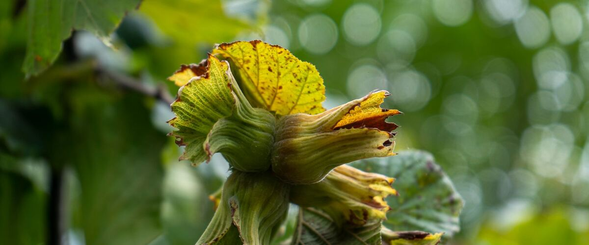

When to plant hazelnut trees in Salem, OR
Plant hazelnut trees in Salem Mar 1 – Apr 26.
- Difficulty
- Easy
- Sun
- Full sun
- Spacing
- 15 to 20 feet apart
- Planting depth
- Same depth as in the nursery
- Frost
- Hardy perennial; comes back every year
- First harvest
- First nuts in three to five years
Why these dates
Salem's typical last spring frost is April 3. As a hardy perennial, this crop doesn't need to wait for that date. In the west-side valleys, though, the soil usually isn't ready to work until about March 1.
West-side valleys. The Willamette Valley, Puget Sound and southern Oregon valleys. Long frost-free seasons, but soil stays cold and wet into May, so warm crops wait for warm soil, not just the last frost.
How to grow hazelnut trees in Salem
- Pick a sunny spot with soil that drains well, and mix in an inch or two of compost.
- Plant hazelnut trees Mar 1 – Apr 26, 15 to 20 feet apart. Same depth as in the nursery.
- Plant at least two compatible varieties for pollination. Water through the first two summers, and pull suckers from the base each year if you want a tree rather than a bush.
- Harvest: Nuts drop on their own from late August to October. Rake them up every few days, before squirrels and jays do, and dry them for a couple of weeks.
Key numbers
- 3–5Years to nuts
- Two compatible typesPollination
- Midwinter, by windBloom time
- Eastern filbert blightBiggest risk
Growing notes
What makes the difference in Northwest gardens, in plain language.
Pollination and variety choice
Hazelnuts bloom in midwinter, long before most plants wake up. The long, dangling catkins are the male flowers, and the female flowers are tiny red tufts on the buds. Pollen moves by wind, not bees, and a tree can't pollinate itself, so you need at least two compatible varieties within about 50 feet.
Jefferson, Yamhill and McDonald resist eastern filbert blight, the disease that wiped out many older Northwest orchards. Theta is often planted as a pollinizer alongside them. Ask the nursery which varieties pair well, since compatibility depends on the specific types.
Eastern filbert blight
This fungus spreads by spores in wet spring weather and causes rows of black, football-shaped bumps along branches. Over a few years it girdles and kills limbs, and eventually whole trees. Older varieties like Barcelona are very susceptible, which is why blight-resistant varieties are the only sensible choice for new plantings.
If you see cankers on an older tree, cut the branch off in dry weather several feet below the visible damage and burn or bag it.
Bush or tree, and harvest
Hazelnuts naturally grow as multi-stemmed bushes. If you want a single-trunk tree that's easier to rake under, pull suckers from the base every year. The Northwest also has a native beaked hazelnut, which grows wild in woods west of the Cascades and makes a good wildlife shrub.
Nuts drop from late August to October. Rake them up every few days before squirrels and jays get them, then spread them in a single layer somewhere dry and airy for a couple of weeks, until the kernels snap cleanly.
Common questions
When is the last frost in Salem, OR?
Typically April 3. In 9 years out of 10, frost is over by April 27. These are 1991–2020 NOAA climate normals for Salem McNary Field.
Is it too late to plant hazelnut trees in Salem?
The spring planting window runs through April 26. Potted plants can still go in later if you water them faithfully through their first summer. Fall planting also works well here.
How long until I can pick hazelnut trees?
First nuts in three to five years. Nuts drop on their own from late August to October. Rake them up every few days, before squirrels and jays do, and dry them for a couple of weeks.
Do I need two hazelnut trees?
Yes. Hazelnuts can't pollinate themselves, so plant at least two compatible varieties, such as Jefferson with Yamhill or Theta. They should be within about 50 feet of each other.
Are filberts and hazelnuts the same thing?
Yes. Filbert is the older name used by many Northwest growers, and hazelnut is the common name elsewhere. They're the same nut.
How do I keep squirrels from taking my hazelnuts?
Pick up fallen nuts every few days during harvest so squirrels and jays don't get to them first. Spreading a tarp under the tree makes gathering faster.
Also plant in Salem around the same time
Planting dates for hazelnut trees in nearby areas
- Eugene, OR Mar 1 – Apr 26
- McMinnville and Newberg, OR Mar 4 – Apr 29
- Corvallis and Albany, OR Mar 1 – Apr 26
- Cottage Grove, OR Mar 13 – May 8
- Portland, OR Mar 1 – Apr 26
- Gresham, OR Mar 1 – Apr 26
Full planting calendar for Salem · Hazelnut trees in every city